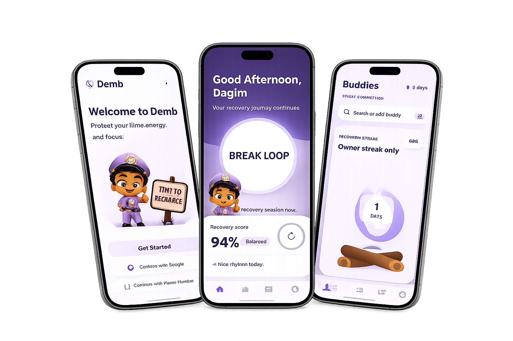

Focus gets stolen in loops
High-dopamine apps pull attention through tiny repeated checks that are hard to notice.
Digital recovery, not digital shame
A recovery-first focus app that protects your time, energy, and attention from digital burnout.

The problem
High-dopamine apps pull attention through tiny repeated checks that are hard to notice.
Late-night scrolling makes recovery harder before tomorrow even begins.
Screen time, mood, stress, movement, and rest all add up into a bigger recovery signal.
The solution
Arm focus protection for selected apps without immediately showing a lock screen.
When temptation hits, Demb shows a transparent restriction screen with a large countdown.
Walk, breathe, stretch, hydrate, read, or run a screen-off reset mission.
Track locally first, then sync plans, buddies, and recovery events when internet returns.
Features
Trust
Demb keeps core recovery data on-device with SQLite and AsyncStorage fallbacks, then syncs profiles, buddy events, and queued actions to Supabase when the connection is ready.
Early access